Local workout calendar · No account required · Dark theme only · Updated for version 2.4.1 (Auto export: a backup in a folder you choose, updated after every change)
Liftloq keeps your workout plan on your device. Mark days on the calendar, manage workout types, plan and time HYROX workouts, and optionally track supplement spending — without signing in.
1. Mark a workout on the calendar
Open Calendar (home).
Tap a day (or the add button). The day sheet has collapsible Bodybuilding, HYROX workouts and Notes sections.
Pick up to three entries in total (Bodybuilding types and HYROX workouts combined). At 3, the other picks are disabled until you deselect one. HYROX rows have a checkbox: a picked row says Tap to unselect; tap it again to remove it.
Tap Save. Nothing is stored until you save. Clear day, Cancel and Save float in a bar at the bottom of the sheet; everything scrolls up clear above it, Notes included (also with the keyboard open).
Save an empty day: to remove a workout, unmark it (tap its chip, or a HYROX row’s checkbox) and tap Save. Save works even when the day ends up with nothing selected; the day’s workouts are cleared and its note stays unless you clear the note too. On a new day with nothing picked, Save stays off. Clear day removes everything at once, note included.
The day shows one colour band per entry: Bodybuilding first, then HYROX.
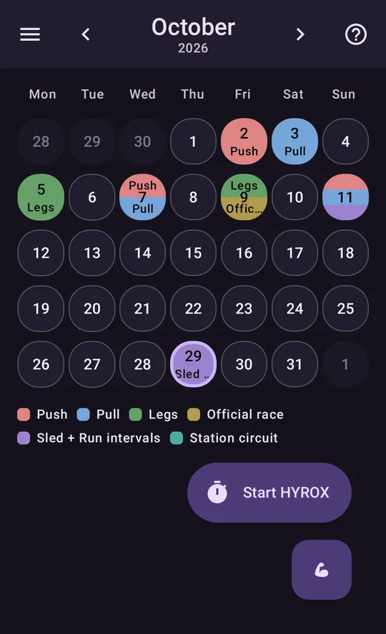
Calendar: tap a day to open it. Each day shows up to 3 colour bands; names appear with 1–2 entries.
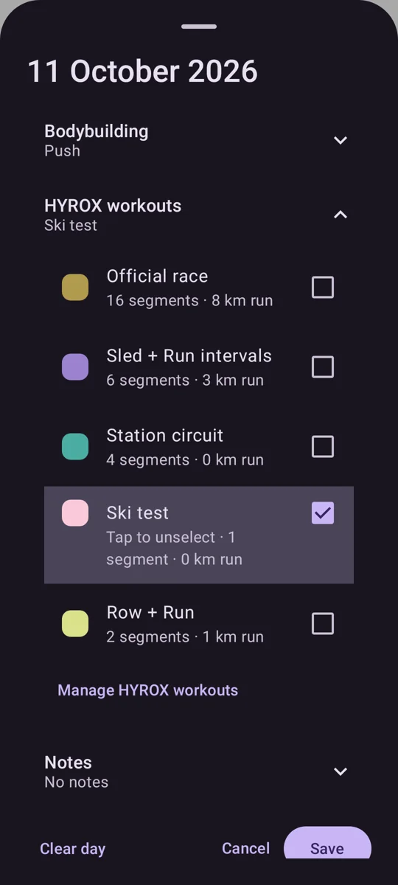
Day sheet: Bodybuilding, HYROX workouts and Notes; at 3 of 3 picked, the rest is disabled. Clear day, Cancel and Save float at the bottom.
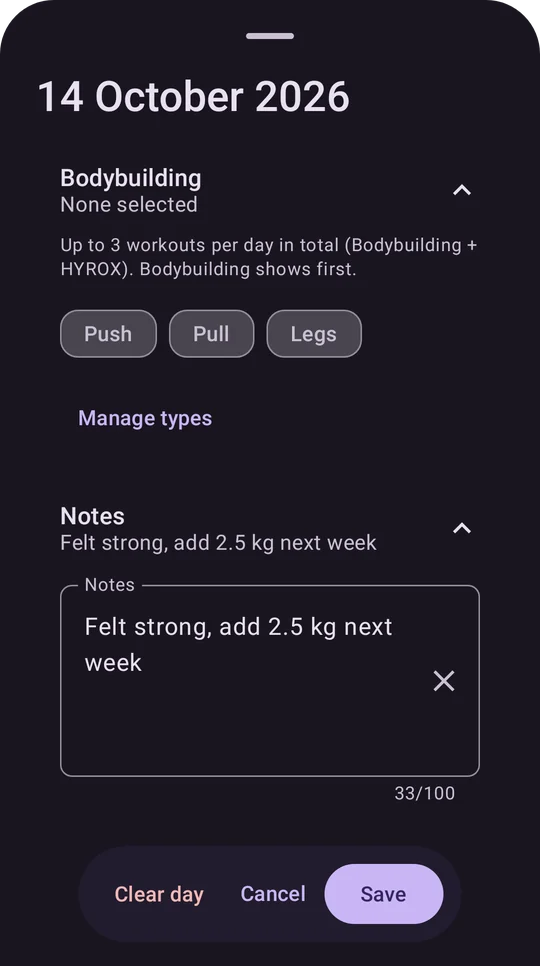
Push unmarked: None selected. Save stays on and clears the day’s workout; the note stays.
2. Add and remove Bodybuilding types
Open the menu (☰) → Bodybuilding. Or on a day sheet, tap Manage types.
To add: tap +, enter a name, pick a color, then tap Save.
To remove: tap the trash icon on a type, then confirm Delete.
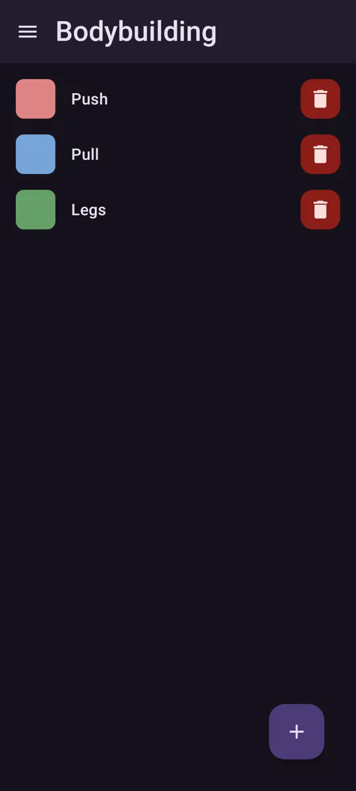
Bodybuilding: delete with trash, add with +.
3. Advanced bodybuilding (exercises on workout types)
Bodybuilding has two modes. Simple (default) works exactly as before: you mark a day with a workout type, and a type has only a name and a colour. Advanced also lets you keep exercises on each workout type and log sets, reps and kg.
Turn it on in Settings → Modes: under Bodybuilding, tap Advanced. The switch is only shown while Bodybuilding is on.
Add exercises to a type once: menu (☰) → Bodybuilding, tap a type (or + for a new one). Below the colour there is Exercises. Tap + Exercise and pick one from the list, grouped by muscle (Chest, Back, Shoulders, Biceps, Triceps, Legs, Calves, Core). Tap an exercise to set how many sets it has (1–20, for example “Chest · 3 sets”); the Sets field always shows the number that is saved. Use ⋮ to move it up or down, and the red trash button to remove it. Then tap Save.
On a day, open the Bodybuilding section and pick the type. Its exercises are already there, with empty sets. The first exercise is open: fill in reps and kg, and add more with + Set. A set counts as done as soon as you enter reps or kg; an empty set is not done. The summary shows how many sets are done and your best kg. Tap a card to open or close it. With two types picked, each type’s exercises follow in chip order.
Doing something extra today? Tap + Exercise for this day. It is marked This day only and does not change the type.
Tap Save on the day sheet to keep the day and its sets. If you change a type’s exercises later, days you already logged stay as they were.
Missing an exercise? At the bottom of the list, tap + Custom exercise, enter a name, choose the muscle group and tap Save. It is listed in its group from then on.
Logs from version 2.3.0 are kept as This day only exercises, and each type starts with the exercises of its most recent logged day. Switching back to Simple only hides all of this; nothing is deleted. Unmarking a type on a day and saving removes that type’s exercises from the day (This day only exercises stay). Clear day in Advanced mode also clears that day’s exercises.
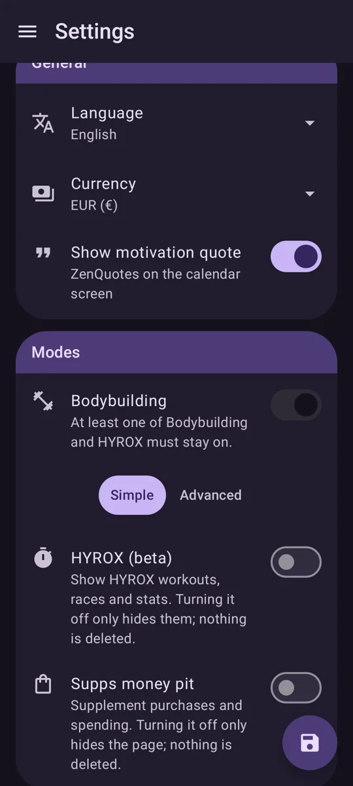
Settings → Modes: Simple | Advanced under Bodybuilding.
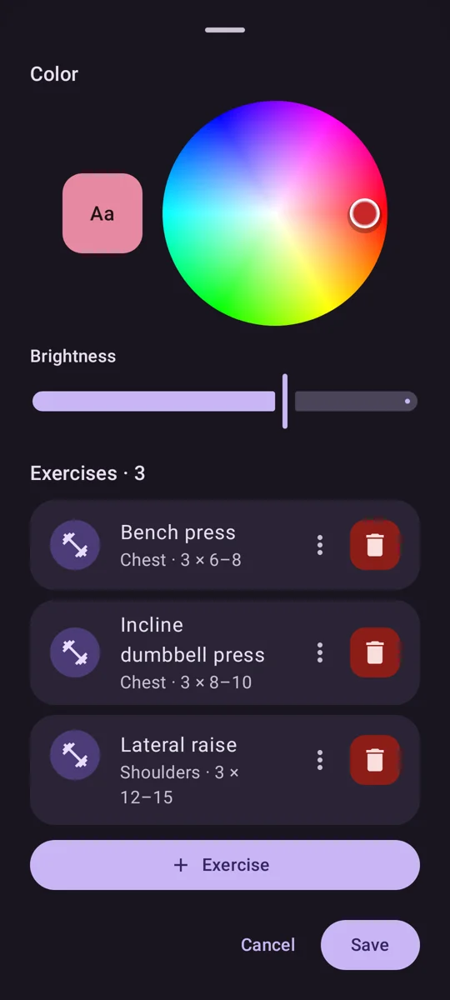
Edit type in Advanced mode: Exercises below the colour. Tap an exercise to set its number of Sets.
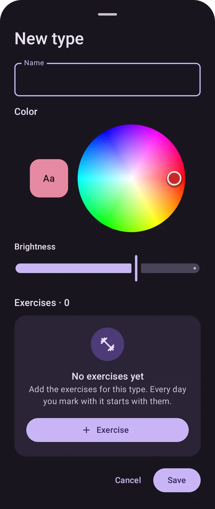
A type without exercises: No exercises yet.
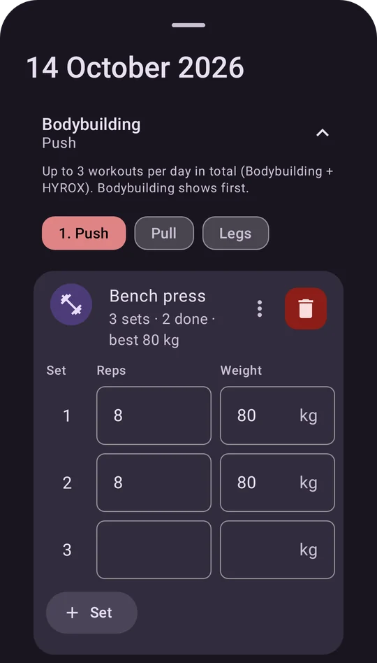
Day sheet: the exercises of Push are already there. Filled sets count as done; the empty third set does not.
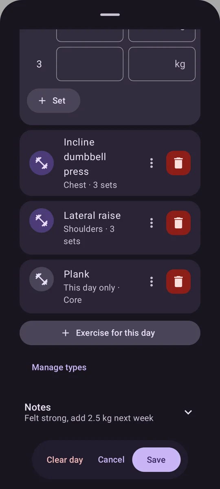
+ Exercise for this day adds an extra marked This day only. The sheet scrolls clear above the Clear day / Cancel / Save bar.
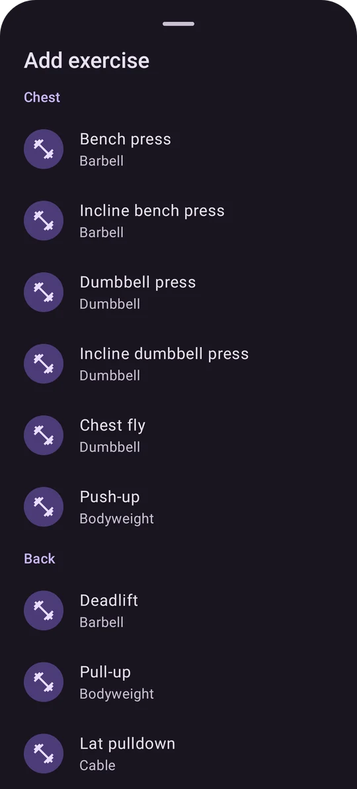
+ Exercise: exercises grouped by muscle, each with the dumbbell icon.
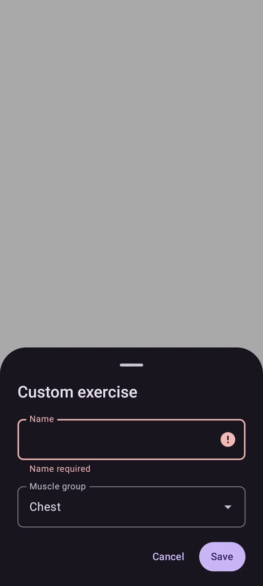
+ Custom exercise: Name is required.
Last time and records
In Advanced mode, an open exercise card on a day shows Last: the date and sets (kg × reps) of the last earlier day you logged that exercise, for example “Last · Fri 16 Oct · 80×8 · 80×8 · 82.5×6”. If you have never logged it before, there is no Last row.
Copy last (next to + Set) fills only the empty set rows from that last session, set by set: set 2 gets last time’s set 2, and so on. Sets you already typed are never changed, and no rows are added. The button is greyed out when there is no last session or nothing left to fill. Cancel still discards it.
A PR badge under a set number means a new personal record: that set’s kg is higher than your heaviest set on any earlier day. Only the heaviest set of the day gets it; matching your best is not a PR, and your first session never has one.
Tap the history button on the Last row to see every session of that exercise, newest first, grouped by month, with your best top set at the top. Sessions that set a record carry the same PR badge.
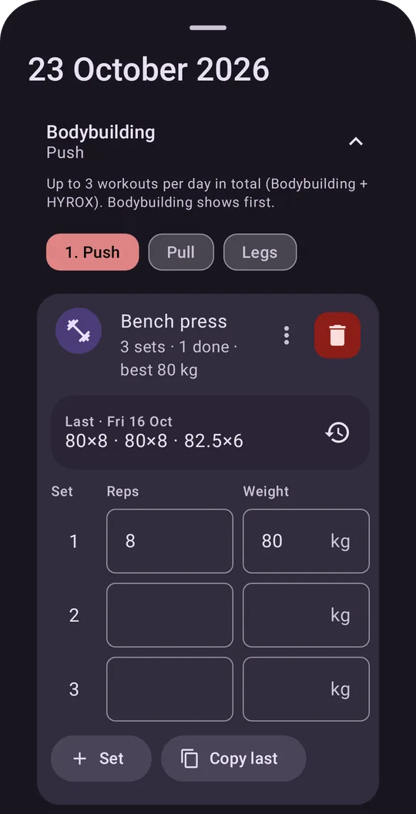
The Last row above the sets, and Copy last next to + Set.
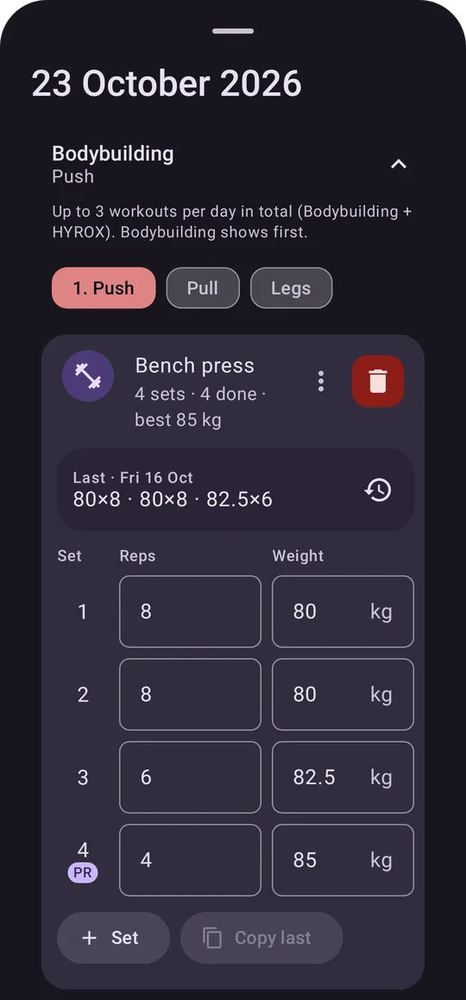
After Copy last: sets 2–3 came from last time, set 1 and set 4 were typed. 85 kg beats the earlier best of 82.5 kg, so set 4 gets PR. Nothing is left to fill, so Copy last is greyed out.
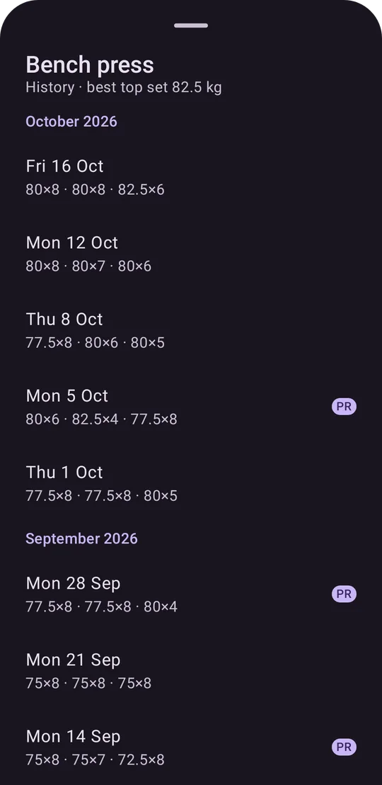
History: every session of the exercise by month, newest first. PR marks sessions that beat all earlier ones.
4. Track supplements (Supps money pit)
Open the menu (☰) → Supps money pit.
Tap + to add a purchase (name, price, date), then tap Save.
Set currency under Settings (same menu).
See Total spent on supplements and the Money burnt list.
Don't need it? Turn off Supps money pit in Settings → Modes; the page leaves the menu and the swipe cycle, and your purchases are kept.
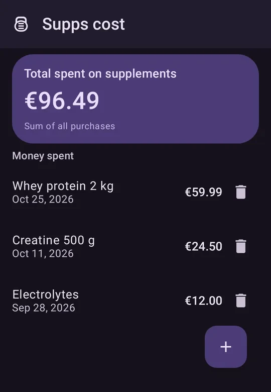
Supps money pit: tap + to add a purchase, then Save.
5. HYROX
Builder: menu (☰) → HYROX → +. Name the workout, pick a colour and division, then tap + Segment to pick a run or station from the list (sorted into Runs and Stations). While the list is still empty, + Full race next to it adds the 16 official segments. A new segment opens ready to edit (distance or reps, weight); tap any card to open it, use ⋮ → Move up / Move down to reorder, and the red trash to delete it (you confirm first). The list scrolls under the floating Cancel and Save buttons (bottom right). If the name is empty, Save scrolls back to the Name field and shows Name required. When editing an existing workout, Delete is next to the title.
Delete: on the HYROX list, tap the red trash on a workout (or Delete inside the editor). Confirm — sessions are removed and the workout is cleared from every calendar day. Official race is not re-seeded after you delete it.
Plan it: on a day sheet, open HYROX workouts and pick one or more, then Save.
Start HYROX: on a day with a planned HYROX workout, a Start HYROX button appears above the add button. With several planned, it opens a menu to choose one.
Race mode: a wavy progress bar and the big total sit on top, then a Current card (segment and its time), a Next card (with your best split when known) and your last laps vs best. Tap Next split at the end of each segment. Pause freezes the clock (paused time is not counted; the wave goes flat), Resume continues, the undo button removes the last split. All three sit in one connected row at the bottom. Finish (top bar) asks for confirmation. Then review and Save; results show with an OK button back to the calendar.
Stats: Stats → HYROX shows History (tap a session for its results), best splits and station decay. History is newest first; sessions on the same day stay in the order you did them, also after an export/import.
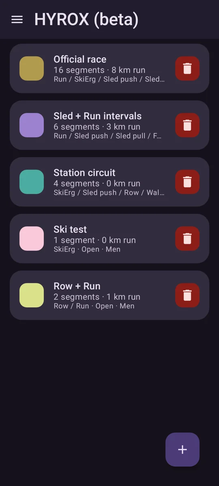
Your HYROX workouts, e.g. 1 segment or 16 segments.
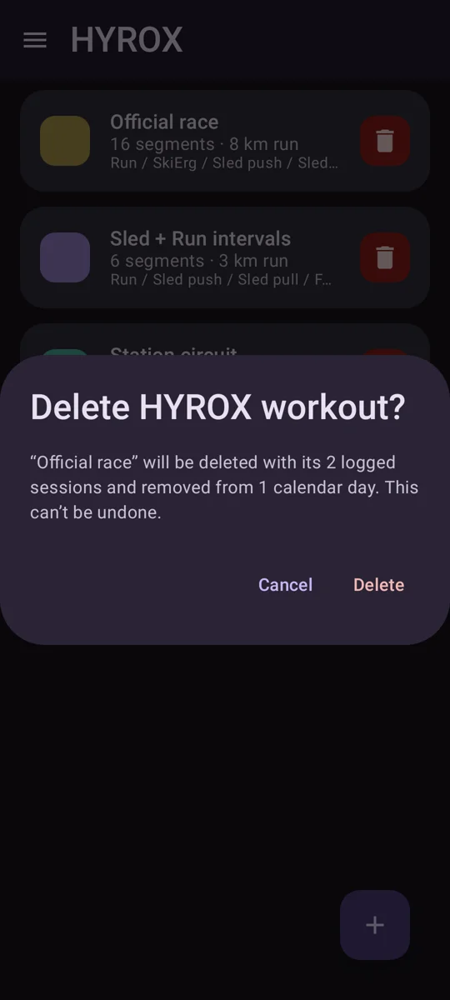
Delete confirm: sessions and calendar days are counted before you confirm.
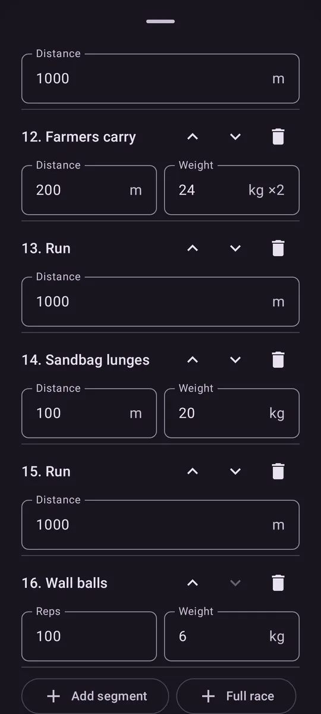
New workout: + Segment and + Full race side by side. Full race is only offered while the list is empty.
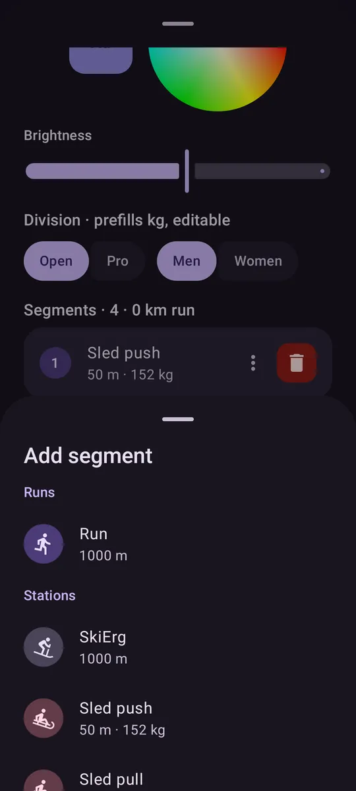
Add segment: Runs and Stations, each with its default distance, reps and weight.
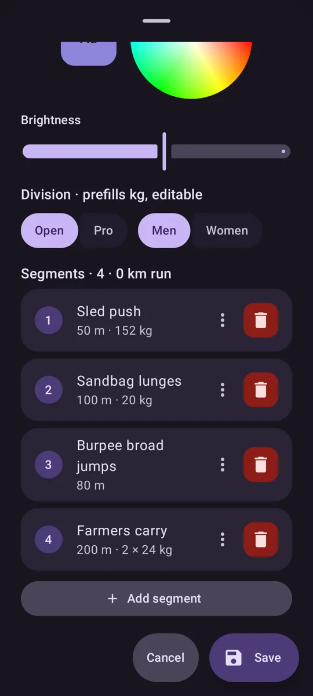
Segment cards: number, name, summary, ⋮ to reorder and the red delete; Cancel and Save float at the bottom right.
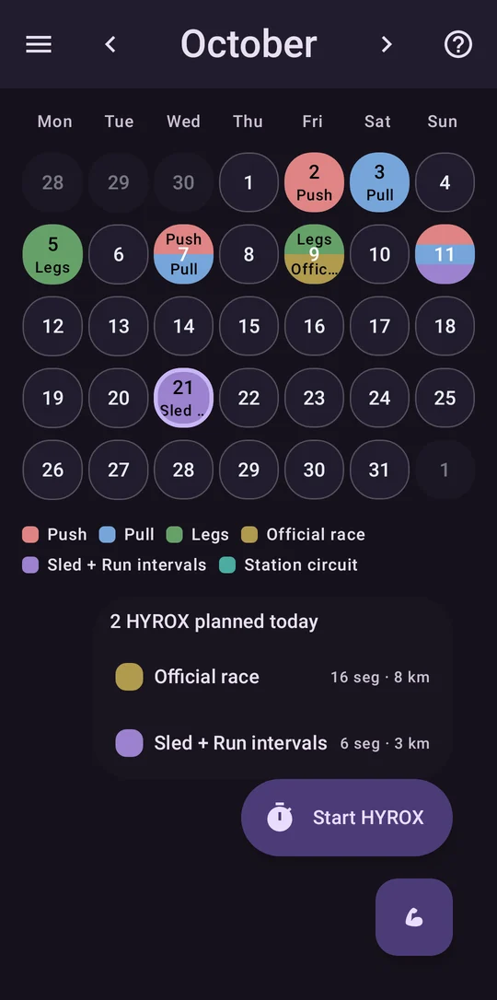
Start HYROX with two workouts planned today.
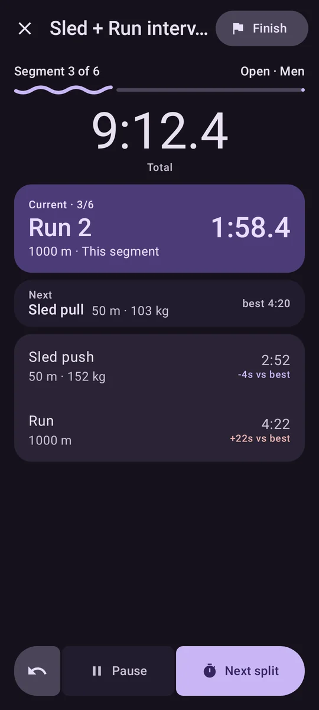
Race mode: wavy progress, total, Current and Next cards, recent laps vs your best; Undo · Pause · Next split at the bottom.
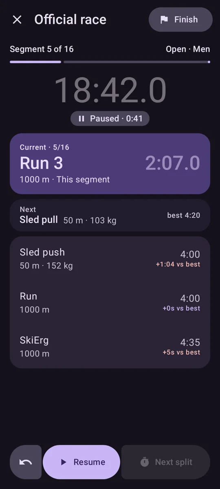
Paused: the clock is frozen, the wave is flat and Next split is disabled until you Resume.
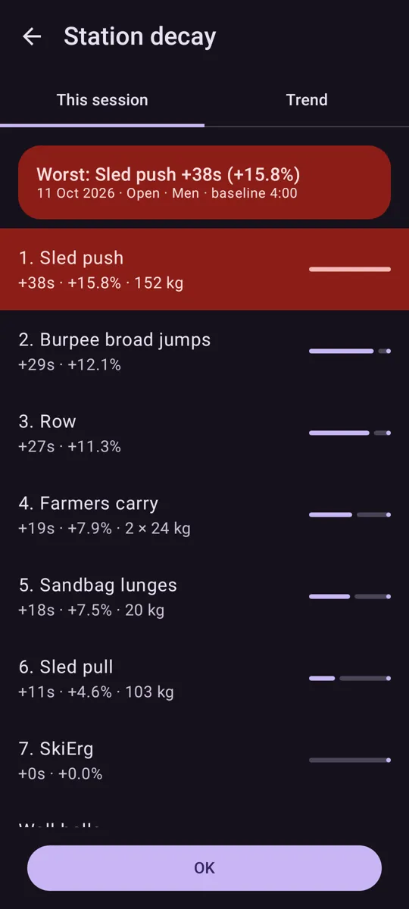
Results after saving: This session / Trend tabs, with OK back to the calendar.
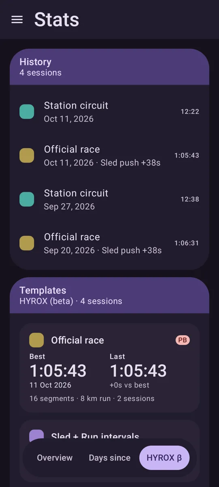
Stats → HYROX: History on top, then Templates. Best split per segment and Station decay follow below.
6. Stats
Menu (☰) → Stats. The bottom toggle has Days since (opens first), Overview, HYROX (only while HYROX is on) and Progress (only in Advanced bodybuilding). While Progress is there, the toggle shows icons only.
Days since shows how long ago you last did each type: green 0–3 days, yellow 4–6, red 7 or more (or never).
Overview shows this week or month by type; HYROX shows History, templates and best splits.
Swipe up to go to the next tab: Days since → Overview → HYROX → Progress → Days since. Long tabs scroll normally first; the tab only changes when you keep swiping up at the bottom. The toggle follows.
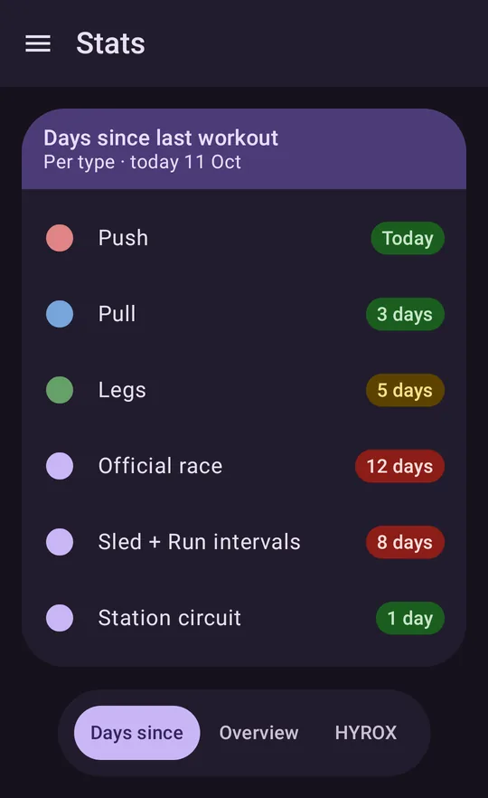
Stats opens on Days since; swipe up for Overview, HYROX and Progress.
Progress (Advanced bodybuilding)
Stats → Progress (the chart icon, last in the toggle) charts one exercise over time. Pick it under Exercise; the list only has exercises you have logged with at least one filled set. It starts on the one you logged most recently.
Top set (default) is your heaviest kg on each day. Volume adds up reps × kg for the day. Estimated 1RM estimates your one-rep max from sets of 1–12 reps. Empty sets don’t count, and a day without a value is simply skipped.
Below the title: Best, Latest and Change (in kg and %) for the chosen range. Choose the range with 4W · 3M · 6M · 1Y · All (3M first). Tap a point on the chart to see its date and value.
Exercises without kg (for example pull-ups) show Max reps instead, and Volume becomes total reps. With only one session there is a single dot and “Log another session to see a trend.”
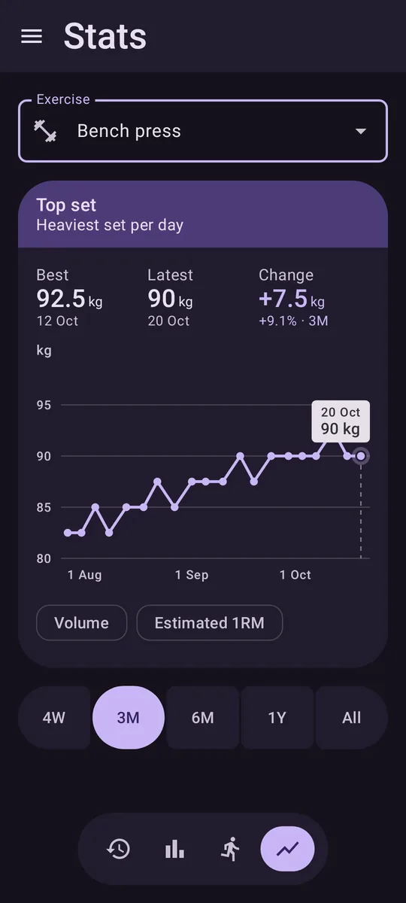
Progress: Bench press top set over 3 months, with Best, Latest and Change. The toggle at the bottom shows icons while Progress is there.
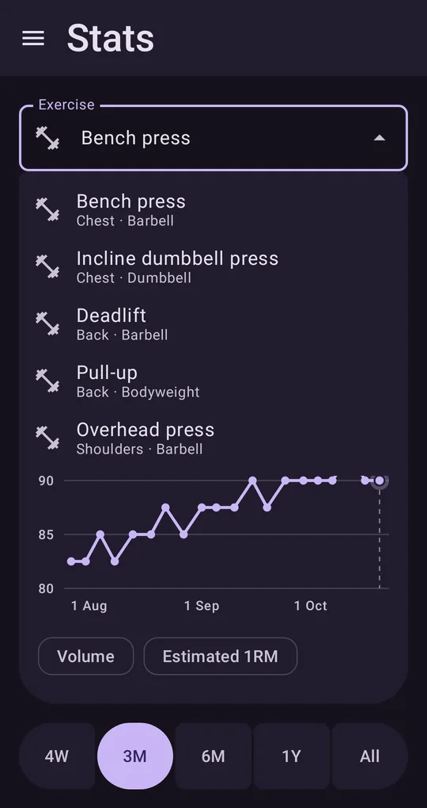
Exercise: only exercises you have logged are listed.
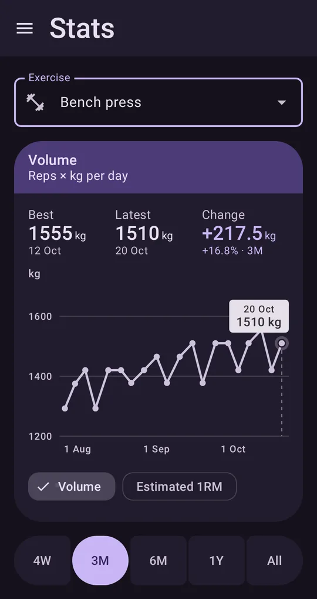
Volume: reps × kg per day.
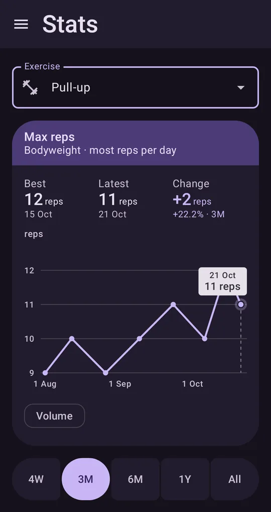
An exercise without kg shows Max reps.
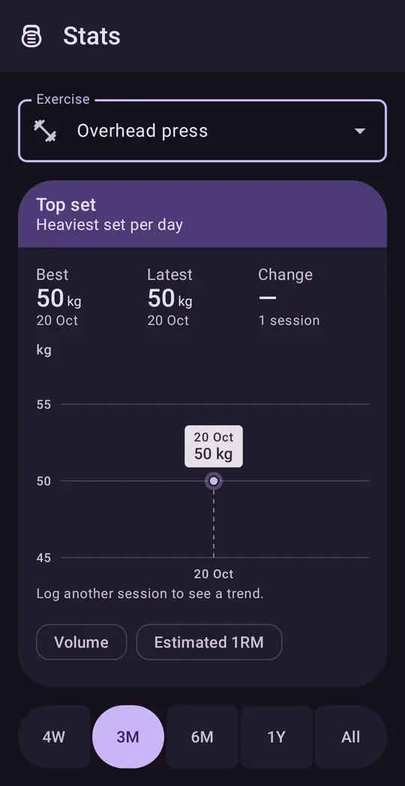
One session so far: a single dot, and Change shows “—”.
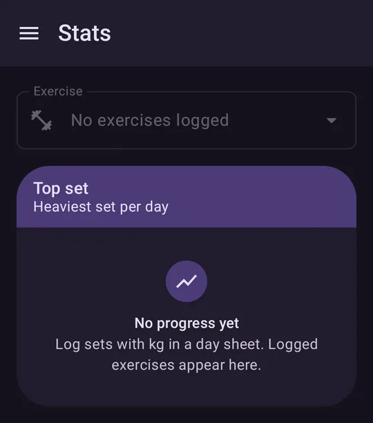
Nothing logged yet: No progress yet, with a hint to log sets with kg in a day sheet.
7. Settings: sections and toggles
Menu (☰) → Settings. Sections: General (language, currency, motivation quote), Modes, Card order, Workout plan and About.
Appearance: Liftloq is dark-only. The app and both home-screen widgets always use the dark theme (with your wallpaper colours on Android 12+), even when the phone is set to light mode.
Modes: turn Bodybuilding or HYROX off to hide everything for that mode (calendar entries, legend, stats, menu pages). Nothing is deleted; turning it back on restores it. One of the two must stay on. Supps money pit has its own switch, separate from that rule: off hides the Supps page from the menu and swipe cycle (purchases are kept).
Card order: use the ↑ / ↓ buttons to set the order of the cards in the menu and in the swipe cycle. Changes apply right away. Cards switched off in Modes are dimmed and marked Hidden; you can still move them, and they are skipped until you turn them back on. Settings is always last in the menu and is never part of the swipe cycle.
A language change is applied when you tap Save (bottom right).
About: Settings → About → About Liftloq shows the app version (name and build number). Help & feedback opens this page (How to use) or an email to the developer (Feedback); Legal has the Privacy policy.
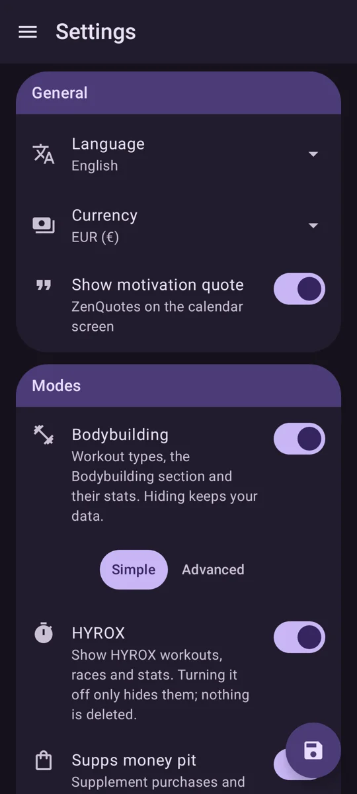
Settings → Modes: Bodybuilding, HYROX and Supps money pit.
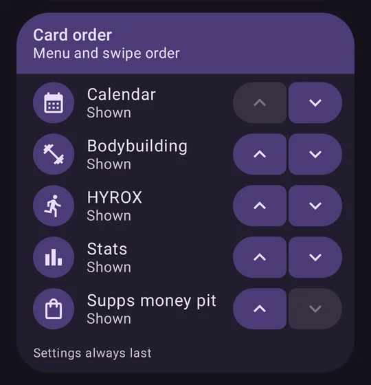
Settings → Card order: menu and swipe order; Settings always last.
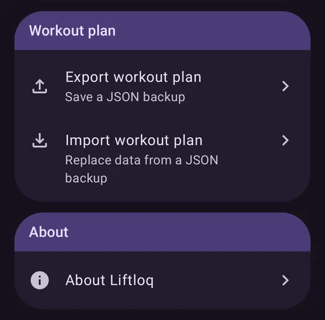
Workout plan (export/import) and About.
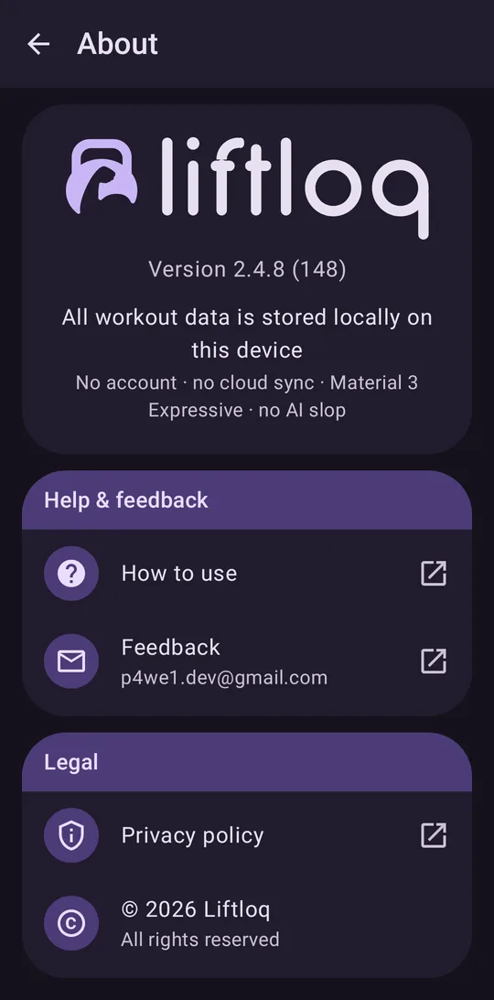
About Liftloq: version, Help & feedback, and Legal.
8. Export / import
Settings → Workout plan → Export workout plan saves a JSON backup (types, days, notes, supplements, HYROX data, your card order and Modes switches, and the Advanced bodybuilding data: the exercises on your workout types, the exercise log and your custom exercises).
Import workout plan replaces your data from such a file, after a confirmation. Days with more than 3 entries keep the first 3. Files from older versions have no card settings, so the default order is used and all cards are turned on. They also have no Advanced bodybuilding data: Bodybuilding is set to Simple and your exercise log on this phone is kept. Files from 2.3.0 have no exercises on workout types, so the ones on this phone are kept.
Auto export
Settings → Workout plan → turn on Auto export. Android’s folder picker opens (in Documents): open or create a folder, for example Liftloq, tap Use this folder and allow access. If you cancel, Auto export stays off.
Liftloq writes one file there, liftloq-backup.json, right away and again right after every change: days, types, notes, HYROX, the bodybuilding log, purchases and the settings that are part of the backup. It is the same file as Export workout plan, so Import workout plan can restore it. The file is replaced each time; no dated copies pile up.
Change folder (shown while Auto export is on) picks another folder. It also shows when the last auto export happened.
Turning Auto export off stops the backups and gives back the folder access; the file already written stays. The folder setting is not part of the backup itself, so on a new phone you choose a folder again.
If the folder is deleted or Liftloq’s access to it is removed, Auto export turns itself off and shows Folder access was removed. Turn on to choose a folder again.
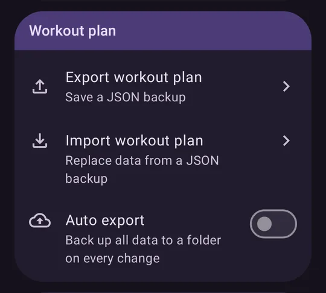
Settings → Workout plan: Auto export is off.
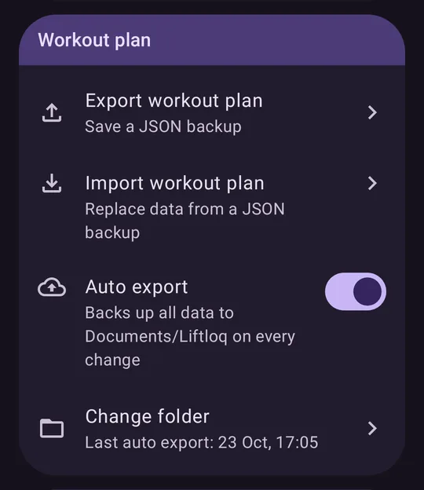
On: the folder is named under the switch; Change folder shows the last auto export.
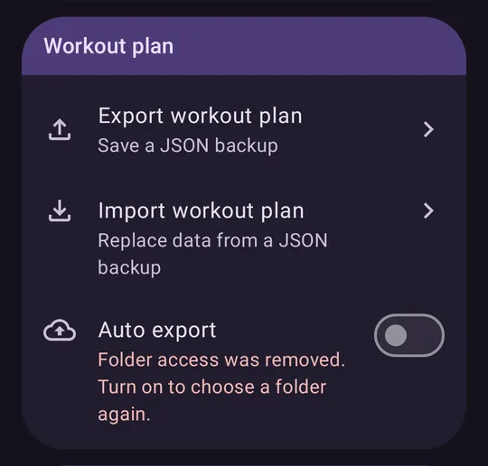
Folder access lost: Auto export is off again, with a hint to choose a folder.
Tip: Swipe left below the calendar to cycle through the cards in your Card order (default: Calendar → Bodybuilding → HYROX → Stats → Supps money pit). Pages for a mode that is off are skipped. Settings stays in the menu only.